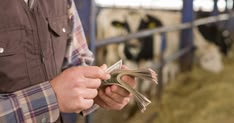
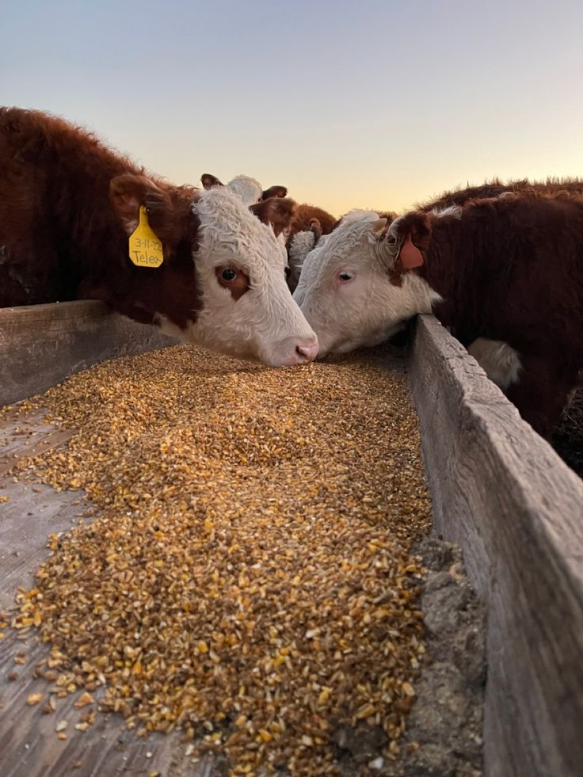
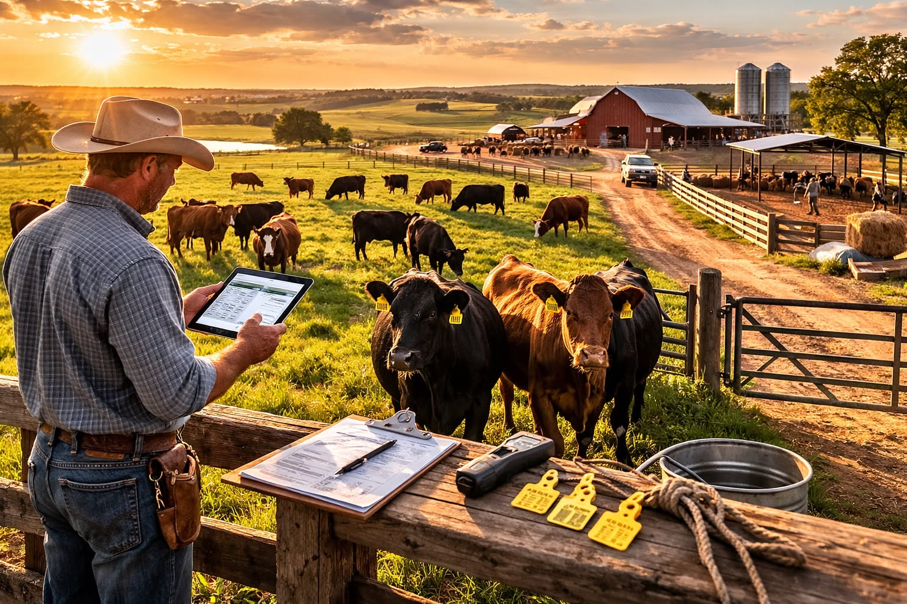
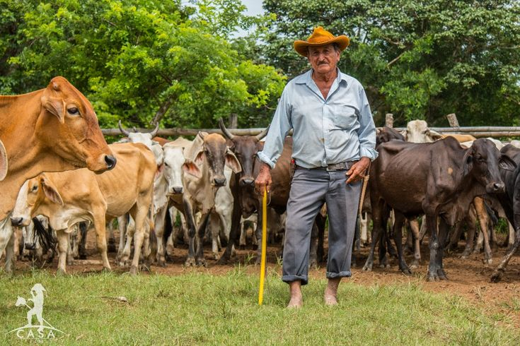
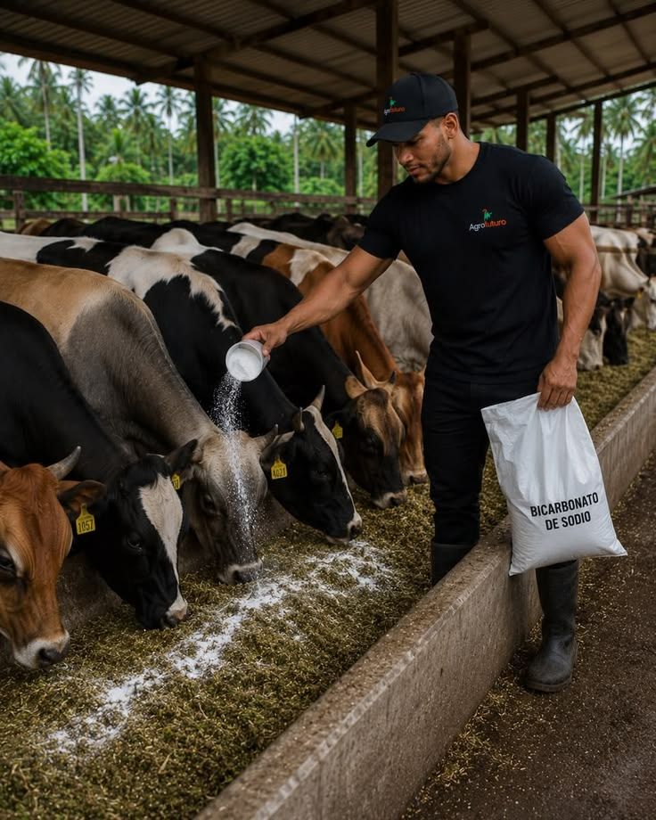

La ganadería genera ingresos para miles de familias campesinas y participa en las actividades comerciales del país mediante la producción y venta de carne, leche y otros productos.

Proporciona alimentos esenciales como la carne y la leche, de los cuales se elaboran productos como queso, yogur, mantequilla y otros derivados lácteos.

Ofrece oportunidades laborales a ganaderos, ordeñadores, veterinarios, transportadores, comerciantes y trabajadores de plantas de procesamiento.

La ganadería hace parte de las costumbres y tradiciones de muchas regiones colombianas, especialmente en los Llanos Orientales, Antioquia, Córdoba, Boyacá y la Costa Caribe.

Con buenas prácticas, como el pastoreo rotacional, la protección de fuentes de agua y los sistemas silvopastoriles, la ganadería puede contribuir al desarrollo sostenible del campo. Sin un manejo adecuado, también puede causar deforestación y degradación del suelo.